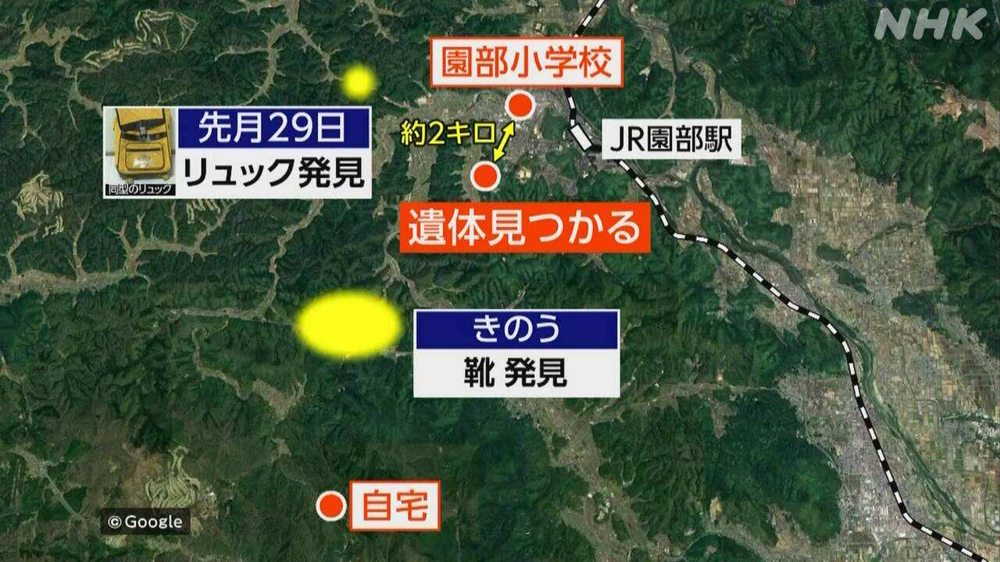
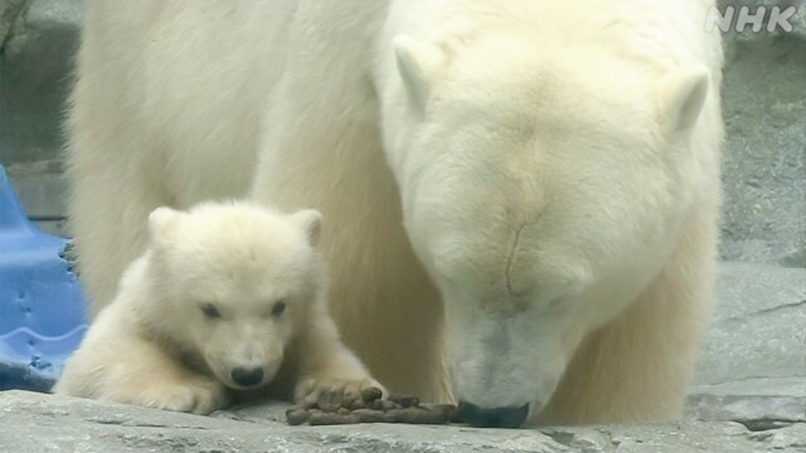

最新ニュース
1️⃣ 京都府南丹市 人が亡くなっているのが見つかった

警察によると、13日、京都府南丹市で、人が亡くなっているのが見つかりました。
子どものようです。
南丹市では、3月23日から小学生の安達結希さんがいなくなって、警察が探していました。
亡くなった人が見つかったのは、小学校から南に2キロぐらいのところです。
警察によると、結希さんは、3月23日の朝、父親が車で小学校に送ったあと、いなくなりました。
29日には、リュックサックが見つかりました。
そして12日、結希さんの家と小学校の間にある山の中で、子どもの靴が見つかりました。
警察は、亡くなった人が誰なのか、調べています。
2️⃣ アメリカとイランの話し合いはうまくいかなかった
アメリカなどとイランの戦いについてのニュースです。
アメリカとイランは、2週間、戦いを止めています。
11日と12日、2つの国の代表がパキスタンで会いました。パキスタンは、戦いを終わりにしたいと考えていて、一緒に話をしました。しかし、話し合いは、うまくいきませんでした。
話し合いのあと、アメリカのバンス副大統領は「アメリカの考えをイランが認めるかどうか見ていきたい」と言いました。
イランの外務省は「意見が大きく違う問題がいくつかあった。一度の話し合いで同じ意見になると考えないほうがいい」と記者たちに言いました。
3️⃣ トランプ大統領 イランの港を使う船をアメリカがチェックする
アメリカとイランの話し合いのあと、トランプ大統領は「イランが石油を売ることができないようにする」と言いました。
アメリカは、ホルムズ海峡を通ってイランの港を使う船をチェックします。
海峡を通る船から、イランがお金を取ることなども認めません。
日本の時間の13日、午後11時から始めると発表しました。
アメリカの軍は、イラン以外の国の船は、ホルムズ海峡を自由に通ることができると言っています。
イランは、軍の船が海峡に近づいたら、戦いを止める約束と違うと言っています。
アメリカとイランの話し合いがどうなるか、世界の人たちが心配しています。
4️⃣ 秋田県 赤ちゃんホッキョクグマを見ることができるようにした

秋田県男鹿市の水族館で、去年12月にホッキョクグマの赤ちゃんが生まれました。
赤ちゃんはオスです。体重が19kgぐらいになって、外にいることに慣れました。
そして11日から、水族館は赤ちゃんを、だれでも見ることができるようにしました。
赤ちゃんはおもちゃで遊んだり、お母さんを追いかけたりしています。
赤ちゃんの名前を決める投票もあります。水族館に来た人は、6つある名前から1つ選んでいました。
5歳の女の子は「ふわふわで白くてとてもかわいかった」と話していました。
- 〜ている / 〜でいる
- 〜によると
- 〜ようだ / 〜みたいだ
- 〜がある / 〜がいる
- 〜から
- 〜くらい / 〜ぐらい
- 〜ところ
- 〜後 / 〜あと
- 〜中
- 〜について
- 〜など
- 〜し、〜し
- 〜になる
- 〜方がいい / 〜方がよい
- 〜方
- 〜こと
- 〜ことができる
- 〜ようにする
- 〜ように
- 〜ても / 〜でも
vebaev.github.io
Generated: 2026-04-13 12:05:12 UTC